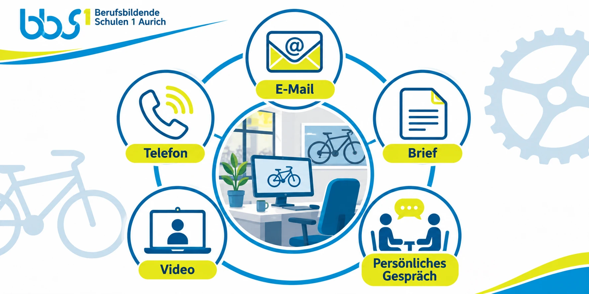

Material M3 · Global Bike
Professionelle Kundenkommunikation
1. Gesprächsregeln
Eine professionelle Kundenkommunikation trägt dazu bei, Missverständnisse zu vermeiden, Kundenanliegen zu verstehen und Vertrauen aufzubauen.
| Gesprächsregel | Bedeutung |
|---|---|
| Freundlich auftreten | Höflich und respektvoll kommunizieren. |
| Aktiv zuhören | Aufmerksamkeit zeigen und das Gegenüber ausreden lassen. |
| Verständlich sprechen | Klare und verständliche Formulierungen verwenden. |
| Gezielt nachfragen | Fehlende Informationen ermitteln und Unklarheiten beseitigen. |
| Sachlich bleiben | Auch bei schwierigen Gesprächen ruhig reagieren. |
| Ergebnisse sichern | Wichtige Informationen und Vereinbarungen zusammenfassen. |
| Zuverlässig handeln | Keine ungesicherten Zusagen machen. |
2. Ablauf eines Kundengesprächs
- Gespräch eröffnen – Begrüßung und Gesprächsanlass.
- Anliegen verstehen – Zuhören und Informationen aufnehmen.
- Anliegen klären – Nachfragen und Informationen austauschen.
- Ergebnisse sichern – Vereinbarungen zusammenfassen.
- Gespräch beenden – Weiteres Vorgehen klären und verabschieden.
Der Gesprächsablauf bietet Orientierung. Je nach Gesprächssituation können einzelne Schritte unterschiedlich umfangreich sein.
3. Fragetechniken
Durch geeignete Fragen lassen sich Informationen gezielt gewinnen.
| Frageart | Funktion | Allgemeines Beispiel |
|---|---|---|
| Offene Frage | Ausführliche Informationen erhalten | Was ist Ihnen besonders wichtig? |
| Geschlossene Frage | Eine Information bestätigen | Ist das korrekt? |
| Alternativfrage | Zwischen Möglichkeiten unterscheiden | Bevorzugen Sie A oder B? |
| Rückfrage | Unklarheiten beseitigen | Wie genau meinen Sie das? |
4. Kommunikationsmedien
Unternehmen nutzen unterschiedliche Kommunikationsmedien für den Austausch mit Kunden.
Telefon: Ermöglicht einen direkten Austausch und schnelle Rückfragen. Wichtige Gesprächsergebnisse müssen gegebenenfalls zusätzlich dokumentiert werden.
E-Mail: Ermöglicht einen zeitunabhängigen, schriftlich nachvollziehbaren Informationsaustausch. Rückfragen können die Bearbeitung verlängern.
Persönliches Gespräch: Ermöglicht einen unmittelbaren Austausch. Auch Körpersprache und Mimik können wahrgenommen werden. Ein gemeinsamer Termin ist erforderlich.
Geschäftsbrief: Eignet sich für formelle und schriftlich nachvollziehbare Mitteilungen. Ein unmittelbarer Austausch ist nicht möglich.
Videokonferenz: Ermöglicht einen persönlichen Austausch über größere Entfernungen. Technische Voraussetzungen müssen erfüllt sein.
Kriterien für die Medienwahl
Die Eignung eines Kommunikationsmediums hängt von verschiedenen Faktoren ab:
- Dringlichkeit des Anliegens
- Umfang der Informationen
- Notwendigkeit von Rückfragen
- Schriftliche Nachvollziehbarkeit
- Vertraulichkeit der Informationen
- Erreichbarkeit der Gesprächspartner
Auch die Kombination verschiedener Kommunikationsmedien kann sinnvoll sein.
Im Fall Alster Cycling
Aktives Zuhören und passende Fragen helfen dir beim Klären der Anfrage. Überlege, welches Kommunikationsmedium du dafür einsetzen möchtest. Für die Übergabe an Emil Werner ist die schriftliche Nachvollziehbarkeit wichtig.
